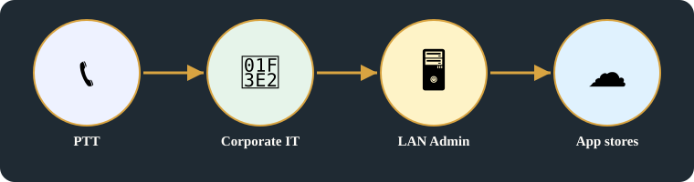
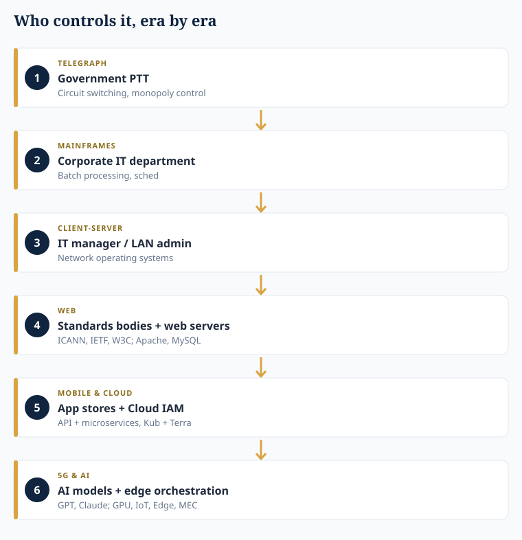
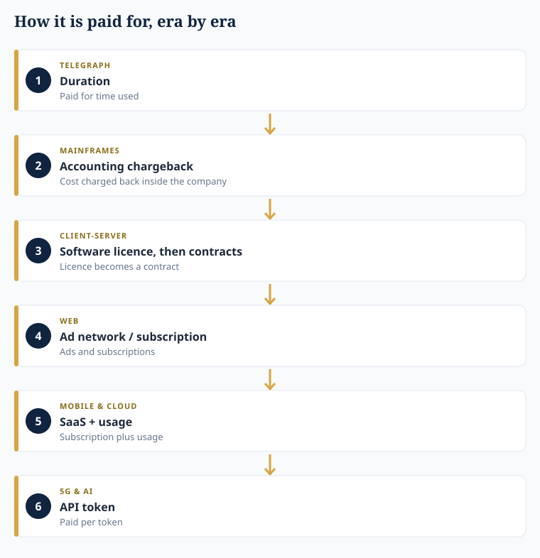
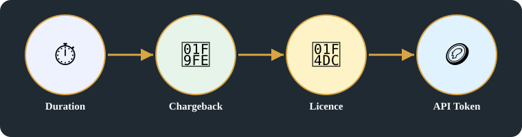
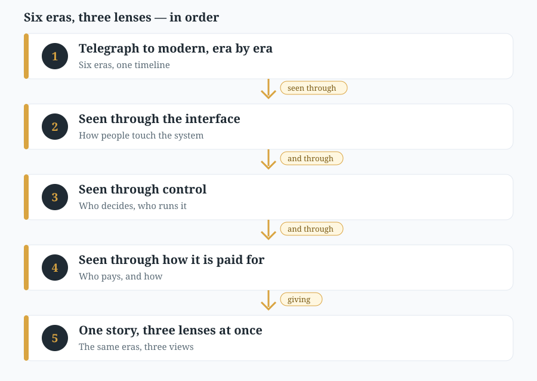
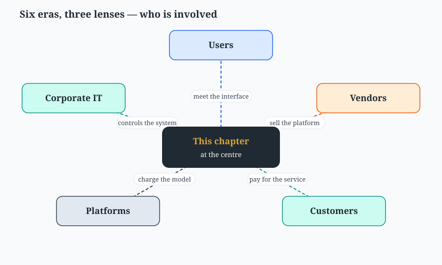

The same six eras, three lenses: interface, control, and how it is paid for
Systems Evolution — story place, in learning order. Technical perspectives are lenses on the same story, not separate containers.
Original images +
Original headline(s) first (R15), exactly as written:
Eras UI Frameworks + Hardware controlled / SW
Original spelling preserved. Enhanced headline above is labelled [Added] and does not replace the original. Spelling on the original page is preserved as written in Key points below; no correction is made in the main explanation — any spelling note lives only in this dropdown.
Original pages behind this card, untouched. On the public repo these images are NOT included — they are in the Vercel deploy only, as with Batches 1–2.
Original page, untouched.
Transcription notes — archive only, not on the main page:
'Subsn' is truncated on the original page; the main page shows the corrected word 'subscription'.
Archive notes (R18) — labelling and provenance, archive only:
Key points above are the original points for this card, as written in batch3-notes.md. Original images are in the section above, untouched.
Tags (moved from main page, per R18): Tags #six-eras-three-lenses New #systems-evolution #software-engineering-development #hardware-computing #infrastructure-operations #industrial-business-networks #allocation #business #network Unique tag belongs only to this card. Related tags link it to other cards that share a domain or vocabulary. New stays on the newest batch until the next batch arrives, then it moves to that batch.
Archive note: enhanced title, detailed explanation, and diagram for this topic are added material, not the owner's original text. Original headlines and original notes are the owner's, spelling preserved. Corrections and transcription markers are in this archive section, not in main presentation.
Detailed explanation

PTT → Corporate IT → LAN Admin → App stores — who controls each era.
1. The same six eras, three lenses at once
First lens, interface and hardware control, in art:

Who controls it — Government PTT → Corporate IT → IT manager / LAN admin → standards bodies + web servers → app stores + Cloud IAM → AI models + edge orchestration.
Second lens, who controls it privately: the business controller, under company rules — Private, in the page's words, spelled 'Bussiness controller' on the original page.
Third lens, how it is paid for, in art:

How it is paid for — duration → accounting chargeback → software licence, then contracts → Ad network / subscription → SaaS + usage → API Token.The payment model changes with every era, together with the interface and the control.
The interface changes, the control changes, and the payment model changes together: that is why the page reads the same six eras three ways at once, not as three separate histories.
2. Bodies, distinguished (R14)
ICANN, IETF, and W3C are not one body:IETF = Internet technical standards; ICANN = names / numbers allocation; W3C = web standards. The page lists them together as bodies; the functions above keep them distinct.
Era by era, in the page's order: ① Telegraph — Govt PTT, Circuit switching, usage duration; ② mainframes — Batch processing, sched, Coorporate IT Dept, Accounting chargeback; ③ Client server — IT manager / LAN Admin, N/wos, Software licence → contracts; ④ web 1.0 / 2.0 — browsers + Database (infra), web servers, Apache, MySQL, ICANN, IETF, W3C bodies, Ad N/w / subscription; ⑤ mobile & / cloud — APP stores, Cloud IAM, API + microservices, Cloud arch (Kub + Terra), SaaS + usage; ⑥ 5G & AI — AI models (GPT, Claude), GPU + IoT sensors + Edge nodes, AI pipeline MEC orchestration, (Pytorch, Tensorflow) service mesh, API Token.
3. — Cross-domain vocabulary, grounded in this page
The business controller is a market story, not only a payment list: the customer pays — by duration, by chargeback, by licence, by subscription, by SaaS usage, by API token. The vendor supplies the device, framework, app store, or AI model the customer pays for. The market is where that exchange happens, and regulation gates it — FCC / TRAI for telecom eras, ICANN / IETF / W3C for names, technical standards, and web standards, as distinguished above. Market, customer, vendor, and regulation are therefore words in this topic, not only in its business-controller column.
Summary:
One era, three questions: what interface and hardware control it, who controls it privately, and how it is paid for.
Payment moves from duration, to chargeback, to licence, to advertising / subscription, to SaaS + usage, to API Token — as the interface and control move with it.
Standards bodies are distinguished, not merged:IETF standards, ICANNallocation, W3C web standards.

Second illustration — Duration → Chargeback → Licence → API Token: how it is paid for, era by era.
In pictures

The journey of this chapter, in order.

The actors in this chapter.
Key points
① Telegraph: UI frameworks + hardware/SW control: Govt PTT, Circuit switching — Bussiness controller (Private, company rules): usage duration
② mainframes: UI frameworks + hardware/SW control: Batch processing, sched, Coorporate IT Dept — Bussiness controller: Accounting chargeback
③ Client server: UI frameworks + hardware/SW control: IT manager / LAN Admin, N/wos — Bussiness controller: Software licence → contracts
④ web 1.0 / 2.0: UI frameworks + hardware/SW control: browsers + Database (infra), web servers, Apache, MySQL, ICANN, IETF, W3C bodies — Bussiness controller: Ad N/w / subscription
⑥ 5G & AI: UI frameworks + hardware/SW control: AI models (GPT, Claude), GPU + IoT sensors + Edge nodes, AI pipeline MEC orchestration, (Pytorch, Tensorflow) service mesh — Bussiness controller: API Token
Horizontal links
Same six eras → How the interface changed: from telegraph keys to real-time, XR, and AI UI's (UI frameworks evolution) — The same six eras, three lenses: interface, control, and how it is paid for adds control and business lenses, it does not replace How the interface changed: from telegraph keys to real-time, XR, and AI UI's.